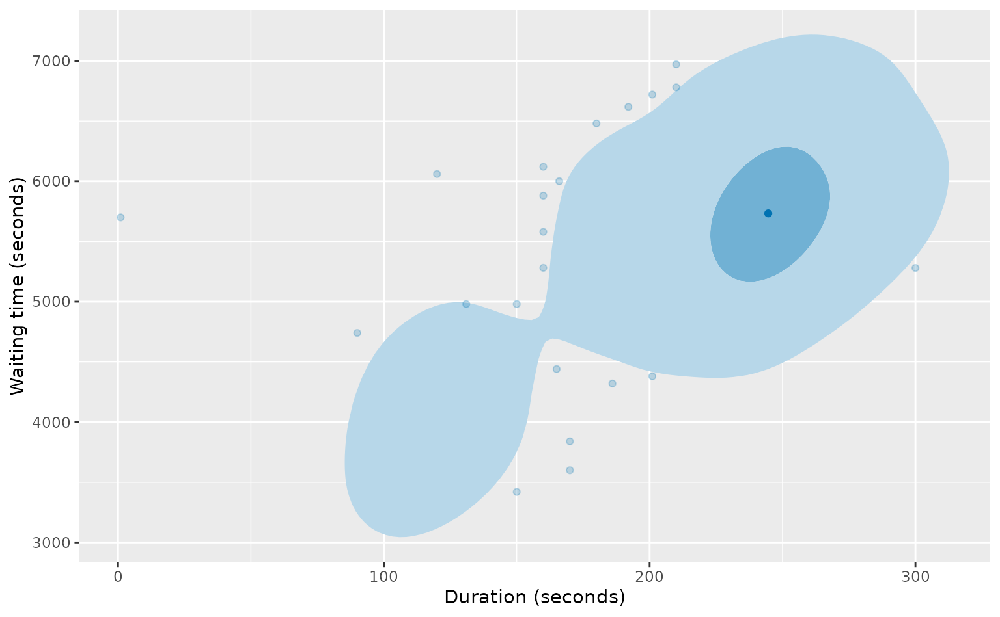

Most readers will have first come across anomaly detection using boxplots. In this chapter, we will describe the original boxplot method, along with some variations that have been developed to address some of the limitations of the original approach.
5.1 Univariate data depth
For univariate data, the depth of an observation is a measure of how deeply buried it is when all observations are ordered. That is, how far would you need to count from either the smallest or largest observation until you encountered the observation of interest. So the minimum and maximum both have depth 1, while the sample median has the largest depth of (n+1)/2.
The other sample quantiles as defined in Section 2.4 do not correspond exactly to specific depths, but Tukey (1977) introduced variations for some quantiles that are based on depths. He called these “letter values”.
Letter values(Tukey 1977; Hoaglin 1983) are order statistics with specific depths, defined recursively starting with the median. The depth of the median is d_1 = (1+n)/2. The depths of successive letter values are defined recursively as d_i = (1+\lfloor d_{i-1}\rfloor)/2, i=2,3,\dots. The corresponding letter values are defined as
L_i = y_{(\lfloor d_i\rfloor)}
\qquad\text{and}\qquad
U_i = y_{(\lfloor n-d_i+1\rfloor)}
when the depth is an integer. Otherwise the depth is an integer plus 1/2, and the letter values are given by
L_i = (y_{(\lfloor d_i\rfloor)} + y_{(\lfloor d_i\rfloor+1)})/2
\qquad\text{and}\qquad
U_i = (y_{(\lfloor n-d_i+1\rfloor)} + y_{(\lfloor n-d_i+1\rfloor+1)})/2 .
Rather than label these using integers (L_2,L_3,\dots), Tukey proposed using letters (L_F,L_E,L_D,\dots) where F= fourths, E= eighths, D= sixteenths, and so on.
Because each depth is roughly half the previous depth, the lower letter values provide estimates of the quantiles with probabilities p=\frac{1}{2},\frac14,\frac18,\dots, while the upper letter values provide estimates of the quantiles with probabilities p=\frac{1}{2},\frac34,\frac78,\dots. Hoaglin (1983, p44), showed that \hat{Q}(p) with type = 8 gives approximately the same result as the corresponding letter value.
Consider the batting averages from Section 2.4. In this example, n = 1138, so the depths of the first four letter values are given by
d_1 = 569.5,\quad
d_2 = 285,\quad
d_3 = 143,\quad\text{and}\quad
d_4 = 72,
and the corresponding letter values are given by \begin{align*}
L_1 &= U_1 = (y_{(569)}+ y_{(570)})/2 = 26.63 &\\
L_F &= y_{(285)} = 16.59 \qquad
&U_F &= y_{(854)} = 36.71 \\
L_E &= y_{(143)} = 11.57 \qquad
&U_E &= y_{(996)} = 43.28 \\
L_D &= y_{(72)} = 8.29 \qquad
&U_D &= y_{(1067)} = 47.29
\end{align*} We can compute the letter values using the lvtable() function from the lvplot package.
#> depth LV 2.5% 97.5%
#> Dl 72.0 8.286 7.524 8.727
#> El 143.0 11.568 10.698 11.948
#> Fl 285.0 16.591 15.583 17.697
#> M 569.5 26.631 25.732 27.921
#> Fu 285.0 36.714 35.662 37.649
#> Eu 143.0 43.278 42.421 44.214
#> Du 72.0 47.289 46.561 48.227
The output also provides 95% confidence intervals based on Equation 2.2. The estimates are similar, but not identical, to the quantiles calculated using the quantile() function.
batave |>quantile(prob =c(0.5^(4:1), 1-0.5^(2:4)), type =8)
Boxplots were invented by John Tukey as a quick summary of medium sized data sets (Tukey 1975, 1977; Wickham and Stryjewski 2011). They are widely used to identify anomalies, which are shown as separate points in the plot.
Figure 5.1 shows a boxplot of the cricket batting average data.
Figure 5.1: Career batting averages for all men and women to have played test cricket and batted more than 20 times. The anomaly is Don Bradman, who averaged 99.94 over his career.
In the ggplot2 version of the boxplot shown here, the middle line in the box shows the median, and the ends of the box are the quartiles computed using type = 7. The base R version is computed using the boxplot() function, which uses the fourths to delineate the box.
Whichever variation is used, roughly half of all observations lie within the box. The width of the box is an estimate of the “interquartile range” (IQR). Any points more than 1.5 IQR outside the box are shown as anomalies and appear as separate points in the plot. The “whiskers” that extend out each side of the box show the range of the remaining points.
Originally, Tukey proposed two levels of outliers — those more than 1.5 IQR beyond the box were labelled “outside” values, while those more than 3 IQR beyond the box were labelled “far out” values. Most software implementations of boxplots do not distinguish between these groups.
In this cricket batting example, the boxplot works well because the data set is not too large or small, and the distribution of points other than the anomaly is unimodal.
However, boxplots can be misleading, and are they are limited in at least two respects.
For large data sets, boxplots show too many points as anomalies, and it is hard to distinguish them.
Boxplots assume that the distribution of the data is unimodal.
To better understand the first problem, imagine if the data comprised n observations from a standard Normal distribution N(0,1). Figure 5.2 shows an example with 10000 points.
Figure 5.2: Boxplot of 10000 draws from a standard Normal distribution.
Many anomalies are shown, but since all observations come from a simple distribution, none of them are actually anomalies. For this distribution, Q(0.25) = -0.674, Q(0.75) = 0.674, \text{IQR} = 1.349, and so for a large sample size, the boxplot whiskers would be approximately -0.674 - 1.5\times 1.349 = -2.698 and 0.674 + 1.5\times 1.349 = 2.698. Any points outside the whiskers would be identified as “anomalous” by a boxplot and plotted as separate points. The probability of a standard normal observation being at least 2.698 in absolute value is 0.00349. So with 10000 observations, we would have about 35 anomalies identified, none of which would be a genuine anomaly.
The second problem is demonstrated using the Old Faithful eruption duration data, shown in Figure 1.3. As before, we will omit the largest value so we can see the details in the remaining data.
Figure 5.3: Boxplot of Old Faithful eruption durations since 2015, omitting the one eruption that lasted nearly two hours.
Quite a few anomalies are shown, including the one-second eruption we identified earlier. But the remaining “anomalies” are not particularly unusual observations. All the points below 180 seconds are identified as anomalies, even though we know that observations in the region between 100 and 140 are not unusual for this geyser. Because the boxplot does not allow for more than one mode, all the points in the second smaller cluster are identified as anomalies. The points around 300 seconds are also not really anomalies — these are just values in the upper tail of the distribution for eruptions.
5.3 Modified IQR boxplots
Under Tukey’s boxplot approach to identifying outliers, a regular outlier is more than 1.5 IQR beyond the quartiles, while an extreme outlier is more than 3 IQR beyond the quartiles. For a Normal distribution, the probability of genuine observations lying beyond these thresholds is 0.0070 and 0.0000023 respectively, so for large sample sizes, many spurious anomalies will be identified. Even with 1000 observations, Tukey’s approach will find at least one spurious anomaly in a Normal distribution with probability 0.9991.
Barbato et al. (2011) proposed a modification to the boxplot approach to identifying outliers, where the IQR in these thresholds is replaced with IQR[1+0.1\log(n/10)]. This allows the limits to increase with the sample size, in a way that controls the probability of spurious anomalies. Figure 5.4 shows the probability of identifying at least one spurious anomaly in a Normal distribution, using Tukey’s boxplot approach compared to those obtained using the modified IQR approach of Barbato et al. (2011).
Figure 5.4: Probability of at least one spurious anomaly identified in a Normal distribution, based on the boxplot approach of Tukey, and the modified IQR approach of Barbato et al. (2011).
Even with a huge sample size, the probability of identifying a spurious regular anomaly using this modified approach is less than 1/2, and it is almost impossible to identify a spurious extreme anomaly.
Let’s apply this approach to the six examples we introduced in Section 4.1. First we will write a short function to implement the idea.
It misses the anomalies in the cricket batting data, and in the n01b data set.
Only the extreme outlier in the duration data is identified as an anomaly.
In summary, while the modified IQR approach is an improvement on the original boxplot approach, it is not particularly good at finding genuine anomalies in data.
5.4 Letter value plots
The problem that boxplots have with large data sets was also addressed by Hofmann, Wickham, and Kafadar (2017) who introduced “letter-value” plots, a variation of boxplots that replace the whiskers with a variable number of letter values. In these plots, each pair of letter values marks the boundaries of a box. The box bounded by the fourths is the same as the box of a boxplot; the additional boxes extend to successive letter values until the quantiles corresponding to the letter values can no longer be estimated sufficiently accurately from the available data.
Figure 5.5: Letter value plot of career batting averages for all men and women who played test cricket and batter more than 20 times.
Here the median is given by M, the fourths by F, and so on. The middle box (F) is bounded by the fourths and contains all but 2/4 of the data; the next box (E) is bounded by the eighths and contains all but 2/8 of the data; then D is bounded by the sixteenths and contains all but 2/16 of the data; and so on.
In this example, the most extreme box (labelled Z) is bounded by the points that fall within the 1/256 letter values. So it contains all but 2/256 of the data, and shows 2 / 256 \times 1138 = 9 points as anomalies.
The stopping rule used in the letter value plot is to show the boxes up to letter value k, where
0.5\sqrt{2d_k} z_{1-\alpha/2} > d_{k+1}
and z_{1-\alpha/2} is the 1-\alpha/2 quantile of a standard Normal distribution. This choice is based on the idea that the edges of the boxes are quantile estimates, and the confidence interval for each quantile estimate that is displayed should not overlap the subsequent quantile estimate. The Normal distribution arises because the quantile estimate has an approximate Normal distribution (Equation 2.2). This stopping rule means that, on average, there should be fewer than 2z^2_{1-\alpha/2} legitimate observations in the tails. By default, \alpha=0.05, so that, on average, there should be fewer than 2 \times (1.96)^2 = 7.7 legitimate observations in the tails, regardless of the size of the data set.
Letter value plots were not designed to detect anomalies, but to be a useful data visualization tool for univariate distributions with large numbers of observations. So the display of legitimate observations in the tails of the distribution is by design, not a flaw.
In this cricketing example, it looks like there is one true anomaly (Don Bradman) and the remaining 8 observations displayed directly are simply in the tails of the distribution of the remaining data.
When applied to the remaining examples, we see approximately 10–20 observations shown as individual points in each case.
Figure 5.8: Letter value plot of 19 N(0,1) observations with an anomaly at 4.
In this last example, because there are only 20 observations, there is not enough data to estimate the quantiles beyond the fourths. So only the middle box is shown.
5.5 Multivariate data depth
For multivariate data, there is no unique natural ordering of observations by size, so the concept of depth has to be thought about differently. It is still a measure of how centrally a point is located in a data set, but we need to think about what “central” means when there are multiple variables.
There are numerous ways to define depth for multivariate data, nicely summarised in Liu, Parelius, and Singh (1999). Here, we will consider the two simplest approaches.
Tukey depth
The first approach to this problem was (again) due to John Tukey (Tukey 1975) who defined the depth of a point \bm{z} in a data set \{\bm{y}_1,\dots,\bm{y}_n\} as the smallest number of \bm{y}_i contained in any halfspace that contains \bm{z}. This is often called the “Tukey depth” of the point. (The point \bm{z} does not have to be one of the observations.)
For bivariate data, a half space is either of the two parts formed by splitting the plane with a straight line. A diagram will help illustrate the idea. Suppose we have the observations shown in Figure 5.9. These are the first 10 observations from the first two variables of n01. The red line divides the plane into two sections which are called “half spaces”. We are interested in the depth of the orange point (which is not one of the observations).
Code
n01 |>head(10) |>ggplot(aes(x = v1, y = v2)) +geom_point() +geom_abline(aes(intercept =-0.8, slope =-1.8), col ="red") +geom_point(data =data.frame(v1 =0, v2 =-1), col = discrete_colors[1]) +coord_fixed(xlim =c(-0.85, 1.6), ylim =c(-1.85, 1.1))
Figure 5.9: A data set of 10 bivariate observations (shown in black). The dividing red line splits the plane into two halfspaces. We are interested in the depth of the orange point.
There are an infinite number of ways of dividing the plane into half spaces, and the number of points in each half plane will vary depending on where the dividing line falls.
To find the depth of the orange point, we need to find the line which divides the plane into two sections where the half containing the orange point includes as few observations as possible. In fact, the red line is one such solution which has the orange point in a halfspace containing only 2 observations There are no dividing lines that would put the orange point in a halfspace on its own. So it has a Tukey depth of 2.
The depth region D_k is the set of all points \bm{z} with Tukey depth at least k. These form a series of nested convex hulls where D_{k+1} \subseteq D_k. The depth regions for our example are shown in Figure 5.10. The blue region is depth 1, the orange region is depth 2, the pink region is depth 3, and the green region is depth 4.
Code
median <- aplpack::compute.bagplot(n01[1:10, 1:2])z <- tidyr::expand_grid(v1 =seq(-0.9, 1.6, l =200), v2 =seq(-1.95, 1.15, l =200)) |>bind_rows(n01[1:10, 1:2])z$depth <-round(as.numeric(DepthProc::depthTukey(as.matrix(z), as.matrix(n01[1:10, 1:2]))) *10)regions <-list()depths <-sort(unique(z$depth))depths <- depths[depths >0]for (i in depths) { tmp <- z |>filter(depth == depths[i]) hull <-chull(tmp) regions[[i]] <- tmp[c(hull, hull[1]), ]}cols <- discrete_colors[c(2, 1, 4, 3)]p <- n01 |>head(10) |>ggplot(aes(x = v1, y = v2))for (i in depths) { p <- p +geom_polygon(aes(x = v1, y = v2), data = regions[[i]], fill = cols[i], alpha =0.8)}p +geom_point() +coord_fixed(xlim =c(-0.85, 1.6), ylim =c(-1.85, 1.1)) +geom_point(data =data.frame(v1 = median$center[1], v2 = median$center[2]),col ="yellow", size =2 )
Figure 5.10: The depth regions for the 10 bivariate observations from Figure 5.9. The depth median is shown as the yellow point in the centre. The 10 observations are shown in black. These lie at the outer edges of the depth regions.
Depth median
A simple way to define a multivariate median is the “centre of gravity” of all points of maximum depth (Rousseeuw and Ruts 1998). The centre of gravity (or “centroid”) of a shape is the average of all points within the shape. If the shape is convex, it is the point where the shape could be perfectly balanced on the tip of a pin if it were made of a uniform material. For example, the centre of gravity of a rectangle is the point in the middle of the rectangle, and the centre of gravity of a circle is the centre of the circle.
In Figure 5.10, the points of maximum depth are shown in the central green region. The centre of gravity of this region is the yellow point in the middle.
5.6 Bagplots
The bagplot was proposed by Rousseeuw, Ruts, and Tukey (1999) as a bivariate version of a boxplot, constructed using similar principles. Like a univariate boxplot, the bivariate bagplot has a central point (the depth median), an inner region (the “bag”), and an outer region (the “loop”), beyond which outliers are shown as individual points.
To define the bag, we first find the smallest depth region D_k containing at least \lfloor n/2 \rfloor of the observations. Then the bag is linearly interpolated between D_k and D_{k-1}, with the linear interpolation depending on the number of observations in each depth region. Because the bag is interpolated between depth regions, it is also a convex polygon. The procedure is slightly more complicated for small data sets where only D_1 might contain more than half of the observations.
To find the loop, we inflate the bag relative to the median by a factor of 3. This forms the “fence”. Then the loop is the convex hull of the points contained within the fence.
Figure 5.11 shows the bagplot from the same 10 observations as were used in the illustration of depth in the previous section, along with the observations themselves shown in black.
Code
n01 |>head(10) |>gg_bagplot(v1, v2) +geom_point(aes(x = v1, y = v2), data = n01[1:10, ])
Figure 5.11: A bagplot of the 10 bivariate observations from Figure 5.9. The depth median is shown as the blue point in the centre. The darker shaded region is the bag, while the lighter shaded region shows the loop. There are no outliers outside the loop for this data set.
Old faithful bagplot
A more interesting example is obtained in Figure 5.12, showing a bagplot of the durations and waiting times of Old Faithful eruptions.
Code
oldfaithful |>filter(duration <7200, waiting <7200) |>gg_bagplot(duration, waiting) +labs(x ="Duration (seconds)", y ="Waiting time (seconds)")
Figure 5.12: Bagplot of the durations and waiting times of Old Faithful eruptions since 2015.
This demonstrates the drawback of using a bagplot to identify anomalies. The plot has identified all the shorter duration eruptions as anomalous, along with a small number of other eruptions.
A useful variation of the bagplot, especially for larger data sets, displays a scatterplot of the observations, but colored using the same colors as the bagplot, with the deepest observation in the strongest blue, the points within the bag in a lighter blue, and the points within the loop in the lightest color. Outliers are shown in black if any exist.
Code
oldfaithful |>filter(duration <7200, waiting <7200) |>gg_bagplot(duration, waiting, scatterplot =TRUE) +labs(x ="Duration (seconds)", y ="Waiting time (seconds)")
Figure 5.13: Bagplot of the durations and waiting times of Old Faithful eruptions since 2015.
Figure 5.13 shows the value of this version of a bagplot, as you can see a lot of detail in the bag and loop that would not be visible otherwise.
General comments
The idea of depth regions and the depth median can be easily generalized to data with more than two dimensions (Rousseeuw and Struyf 1998). Consequently, it would be possible to define a higher-dimensional version of the bagplot, although it would be difficult to plot it in four or more dimensions. In any case, we will consider approaches to handle high-dimensional data in Chapter 8.
5.7 HDR boxplots
We can compute HDRs from a kernel density estimate to find regions of the sample space where observations are unlikely to occur.
Let’s illustrate the idea with univariate data. In Section 2.7, we estimated the density of the duration of Old Faithful eruptions using a kernel density estimate, and plotted it in Figure 2.16. We can find the 50% and 99% HDRs of this density, which can then be used to form an “HDR boxplot” (Hyndman 1996) as shown in Figure 5.14.
Figure 5.14: Kernel density estimate of the duration of Old Faithful eruptions since 2015. Below the density estimate is shown an HDR boxplot of the same data, with the 50% and 99% highest density regions shown as shaded regions, and observations outside the 99% region shown as individual points.
The HDR shown here can also be produced using the gg_hdrboxplot() function.
Code
of |>gg_hdrboxplot(duration, show_anomalies =FALSE) +labs(x ="Duration (seconds)") +xlim(-10, 320)
Figure 5.15: HDR boxplot of the duration of Old Faithful eruptions since 2015.
Points outside the 99% region are shown separately and jittered vertically to reduce overplotting. This type of boxplot has the advantage that it allows for multimodal distributions, and can identify “inliers” that occur in regions of low density between regions of high density.
Of course, by definition, 1% of points will lie outside the 99% region, so the points shown are not necessarily anomalies, just observations that occur in the lower probability regions of the space. By setting show_anomalies = TRUE, some of the points are highlighted as potential anomalies, using the method described in Section 6.5.
The idea naturally extends to higher dimensions. Figure 5.16 shows the bivariate HDR boxplot of the duration and waiting times for the Old Faithful data. Here we have filtered out very long durations and waiting times first.
Code
of2 <- oldfaithful |>filter(duration <7000, waiting <7000) |>select(duration, waiting)of2 |>gg_hdrboxplot(duration, waiting, show_anomalies =FALSE) +labs(x ="Duration (seconds)", y ="Waiting time (seconds)")

Figure 5.16: Bivariate kernel density estimate of the duration and waiting times of Old Faithful eruptions since 2015, excluding durations and waiting times longer than 2 hours.
There are 2189 observations used to compute this density estimate, and even with that many observations, computing the 99% HDR contour is difficult, as shown by the rather jagged boundary of the HDR region. This is simply a consequence of the sparsity of points in multidimensional space and in the tails of a distribution.
As with bagplots, there is a variation that shows the individual points colored according to the HDR region in which they fall.
Code
of2 |>gg_hdrboxplot(duration, waiting, show_anomalies =FALSE, scatterplot =TRUE) +labs(x ="Duration (seconds)", y ="Waiting time (seconds)")
Figure 5.17: Bivariate HDR boxplot of the duration and waiting times of Old Faithful eruptions since 2015, excluding durations and waiting times longer than 2 hours. Individual points are colored according to the HDR region in which they fall.
5.8 Summary
Boxplots, letter value plots, bagplots, and HDR boxplots are all extremely useful tools in exploratory data analysis, and deserve to be widely applied. They are particularly useful in summarising univariate and bivariate data distributions. However, as we have seen, none of them are effective at anomaly detection, and only HDR boxplots allow for data with multiple modes.
Nevertheless, we will find these tools useful when summarising results from anomaly detection algorithms, and in understanding why some points have been labelled as anomalies.
Barbato, G, E M Barini, G Genta, and R Levi. 2011. “Features and Performance of Some Outlier Detection Methods.”Journal of Applied Statistics, no. 922191616: 1–17. https://doi.org/10.1080/02664763.2010.545119.
Hoaglin, D C. 1983. “Letter Values: A Set of Selected Order Statistics.” In Understanding Robust and Exploratory Data Analysis, edited by David C Hoaglin and Frederick Mosteller, 33–57. New York: John Wiley.
Hofmann, H, H Wickham, and K Kafadar. 2017. “Letter-Value Plots: Boxplots for Large Data.”Journal of Computational & Ggraphical Statistics 26 (3): 469–77. https://doi.org/10.1080/10618600.2017.1305277.
Hyndman, R J. 1996. “Computing and Graphing Highest Density Regions.”The American Statistician 50 (2): 120–26. http://www.jstor.org/stable/2684423.
Liu, R Y, J M Parelius, and K Singh. 1999. “Multivariate Analysis by Data Depth: Descriptive Statistics, Graphics and Inference.”The Annals of Statistics 27 (3): 783–858. https://doi.org/10.1214/aos/1018031260.
Rousseeuw, P J, and I Ruts. 1998. “Constructing the Bivariate Tukey Median.”Statistica Sinica 8: 827–39.
Rousseeuw, P J, I Ruts, and J W Tukey. 1999. “The Bagplot: A Bivariate Boxplot.”The American Statistician 52 (4): 382–87.
Rousseeuw, P J, and A Struyf. 1998. “Computing Location Depth and Regression Depth in Higher Dimensions.”Statistics and Computing 8 (3): 193–203.
Tukey, J W. 1975. “Mathematics and the Picturing of Data.” In Proceedings of the International Congress of Mathematicians, 2:523–31.
———. 1977. Exploratory Data Analysis. Addison-Wesley.